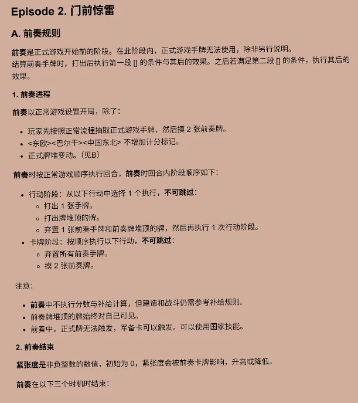
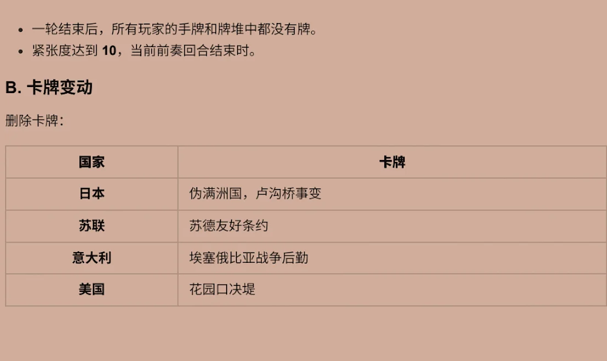

军需官 · 次要战场 — 简易规则
一~四 行动顺序 / 回合 / 补给 / 打出手牌
五~九 建设 / 战斗 / 空军 / 海峡 / 计分
Episode 2 门前惊雷（前奏规则）
苏联 / 美国参战规则
以下为规则书摘要图。完整牌面效果见对局内悬停预览。
一、行动顺序 · 二、回合 · 三、补给 · 四、打出手牌
五、建设部队/征召部队 · 六、发起战斗 · 七、空军 · 八、海峡 · 九、计分

Episode 2《门前惊雷》— A. 前奏规则 / 1. 前奏进程 / 2. 前奏结束

（接上页）前奏结束条件 · B. 卡牌变动
苏联参战规则 · 美国参战规则
 一、行动顺序 · 二、回合 · 三、补给 · 四、打出手牌
一、行动顺序 · 二、回合 · 三、补给 · 四、打出手牌
 五、建设部队/征召部队 · 六、发起战斗 · 七、空军 · 八、海峡 · 九、计分
五、建设部队/征召部队 · 六、发起战斗 · 七、空军 · 八、海峡 · 九、计分
 苏联参战规则 · 美国参战规则
苏联参战规则 · 美国参战规则